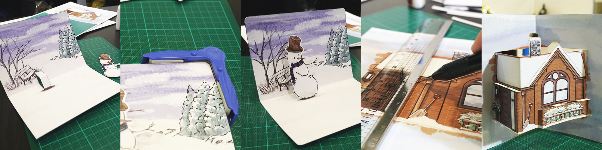

卡片製作相關
- 製作本課程用到的卡片，使用一般的工具就可以了。像是剪刀、美工刀、膠水之類的。
- 有一些不錯的工具可以讓卡片的製作過程更順暢、提升作品質感。珠筆（或稱為壓線筆）可以壓出漂亮的摺線；圓角器可以把卡片的邊緣剪成圓角（大大提升了卡片的質感！）。這些工具並非必要，但相當推薦大家可試試看。珠筆和圓角器都可以在一般書局或生活百貨之類的地方買到 
- 如果家裡有大一點的迴紋針的話，也可以用來壓線
- 各個教學的卡片的模板，放在教學檔案的 zip 壓縮檔裡面
- 各卡片模板都是 A4 的大小
- 為了讓印出來的卡片折起來漂亮、結構穩固，推薦使用 220 ~ 280 磅的紙張（準確來說單位應該是 gsm，但一般店家都稱「磅」），一般來說數位輸出店都可以找到這個磅數的紙
- 如果要就近方便的話，也可以在 7-11 列印，推薦可以使用 7-11 ibon 的雲端列印服務。列印的時候選「特殊紙張」，雖然還是稍嫌薄了一點，但用來練習也還夠